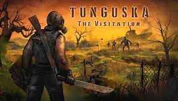

Tunguska: The Visitation


Tunguska: The Visitation is a single-player top-down adventure RPG video game
developed by Rotorist Workshop. it was released on Jun 4,2021 for Microsoft
Windows and is available for perchase on stream and GoG.COM and here also
for free.
Set in late-cold-War Krasnoyarsk Krai region of USSR, Tunguska: The Visitation
follows the story of an American who was dispatched by Manhattan.Weekly to the
Exclusion Zone to investigate the reason for the influx of "treasure hunters" to the
region and assess the veracity of a drug that can cure any disease.
The game's environment is build from a set of location connected in a specific
manner similar to the world of first three S.T.A.L.K.E.R. games. Player, observing
from a isometric/top-down perspective will explore these locations meeting new
people, learning their story, fighting bandits and Ghouls, completing quests, crafting,
selling and buying items.
In this environment so cruel, Player Character has to manage their inventory, take care
of basic human needs, keep track of expenses and equipment worn-out and adjust any
tactics to the situation, threat and own skills.
Gameplay:
Player has access to an equipment and inventory system - the Player Character can carry
a single "long" primary weapon (a gun or long melee weapon) and and two backup "short"
secondary weapons (pistols, SMGs, short melee weapons). They have access to different types
of headgear like helmets or gasmasks, body armor and tools. Different body armors unlock
different number of pockets (inventory slots that can be accessed with hotkeys). Player also
has access to explosives like grenades or mines, but it should be noted that they will deal
damage to everything in the explosion radius. The inventory size player can carry is
restricted by the sizeof their backpack (which can be increased with special items) and
maximum carry weight. Too much stuff in a backpack will increase the stamina usage or
even lock the sprint feature.